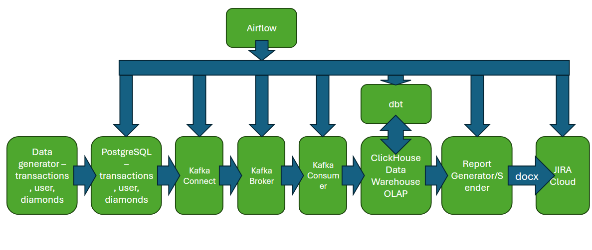
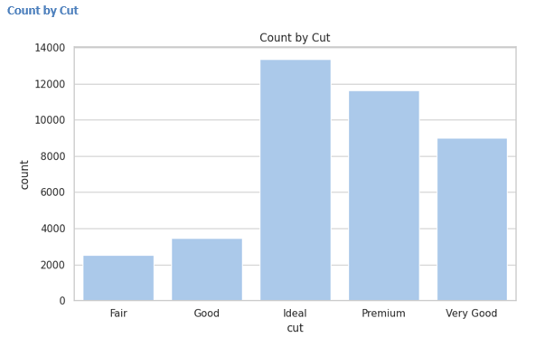
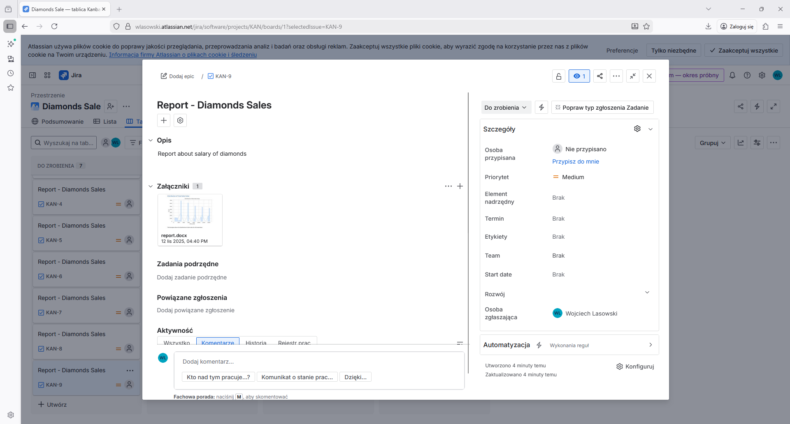
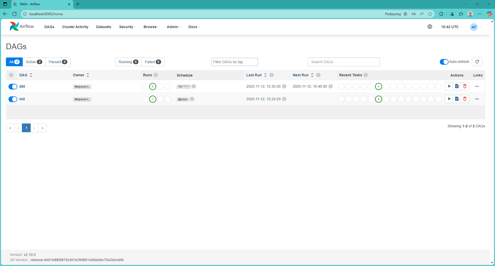
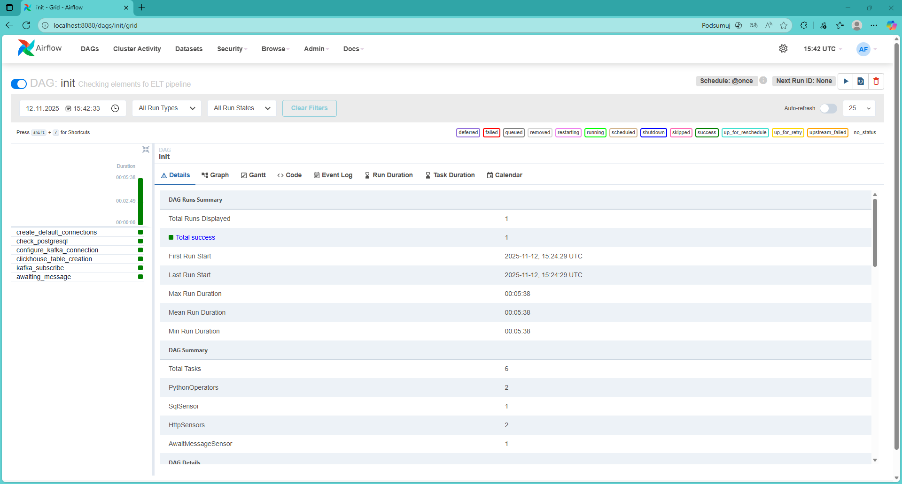
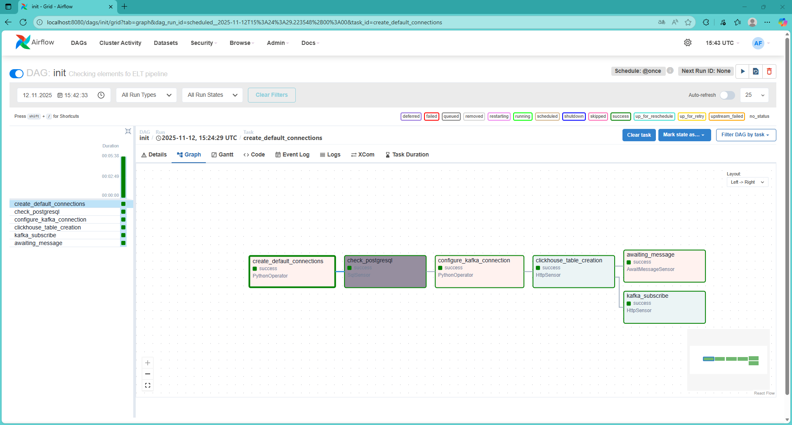
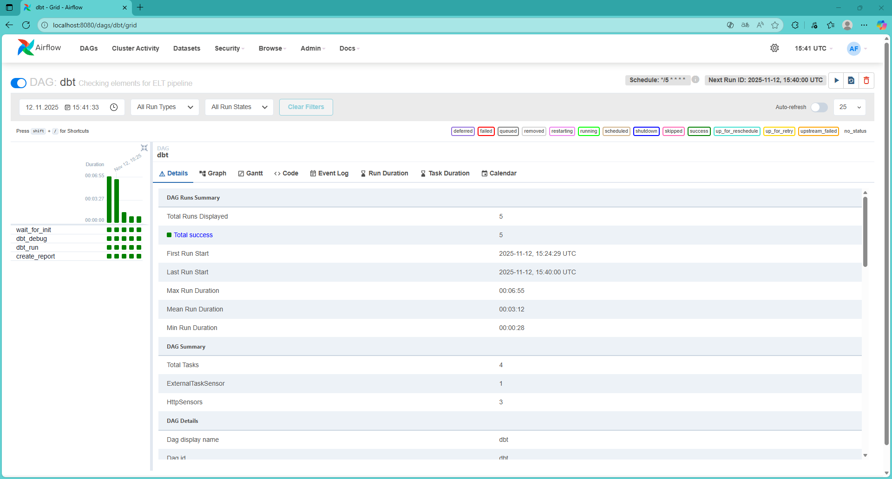
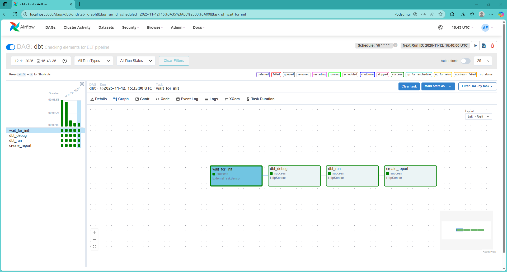

services:
clickhouse:
image: clickhouse/clickhouse-server:latest
container_name: clickhouse
ports:
- 8123:8123
- 9000:9000
...
kafka-to-clickhouse-consumer:
build: ./kafka-consumer
container_name: kafka-to-clickhouse-consumer
ports:
- 8022:8000
...
dbt_api:
build:
context: ./dbt_project
dockerfile: Dockerfile
container_name: dbt_api
ports:
- "8000:8000"
...
broker-1:
image: apache/kafka:latest
container_name: broker-1
ports:
- 29092:9092
environment:
...
airflow:
build:
context: ./airflow
dockerfile: Dockerfile
container_name: airflow
ports:
- 8080:8080
...
airflow-postgres:
image: postgres:15
container_name: airflow-postgres
ports:
- 5432:5432
...
application-postgres:
image: postgres:15
container_name: application-postgres
command: ["postgres", "-c", "wal_level=logical"]
ports:
- 5433:5432
...
kafka-connect:
build: ./kafka-connect
container_name: kafka-connect
ports:
- 8083:8083
...
schema-registry:
image: confluentinc/cp-schema-registry:7.7.0
container_name: schema-registry
depends_on:
- broker-1
ports:
- 8081:8081
environment:
..
raport-creator:
build: ./raport-creator
container_name: raport-creator
ports:
- 8023:8000
...Data Architecture example with Airflow, dbt, ClickHouse, Kafka with an automatic report generator in Pandas and Seaborn that automatically sends reports to Jira.
Introduction
In this project, a data architecture was developed and implemented that implemented a system for analyzing sales data using a data warehouse fed by an ELT pipeline.
The core element is a PostgreSQL database containing transaction, user, and product (diamond) data. However, the system we created allows for the easy expansion of these databases, just as it is done in practice. Data from the PostgreSQL databases is transferred to the ClickHouse data warehouse and analyzed to automatically send a report containing charts to JIRA Cloud at specified intervals. The system allows for the automatic creation and insertion of reports, reducing the number of people involved in creating and distributing reports with similar content, thus increasing employee efficiency within the organization.
Code:
1. Data Architecture Project
The data source in the architecture design will be relational PostgreSQL databases. These will serve as storage for data typical of an online store—transactions, users, etc.
The next element will be the Debezium service—Kafka Connect. It allows tables in a specified PostgreSQL database to be automatically mapped to Kafka topics.
The next element is Kafka—it allows for the transfer of data streams within topics from one location to another. Its key advantages are scalability and resilience to host failures (under certain conditions). A supporting service of Kafka is the Schema Registry, which allows for easy changes to the schema of transmitted data.
The next component is the Kafka Consumer. It allows you to receive messages from a Kafka topic. In subsequent steps, you can use the received messages to save them to the ClickHouse data warehouse database.
The next element is the ClickHouse data warehouse. It enables the rapid execution of typically analytical queries—returning large amounts of data—in an OLAP database. The ClickHouse data warehouse is incomparably faster for such tasks than standard PostgreSQL databases.
The final element is a host that automatically creates reports and sends them to JIRA. This host first retrieves transaction data from ClickHouse, then processes the data in Pandas and creates charts in Seaborn, which are saved as a .docx document with a description. The resulting document—a dashboard displaying the latest sales statistics—is then sent to JIRA Cloud for viewing by project stakeholders.

The entire project was developed in docker-compose, implementing all elements of the data architecture except the data generator, which is not a component, but rather a support element that replaces user interactions. An outline of the docker-compose.yaml file with the elements is shown below:
To start the above docker-compose cluster, run the attached .sh or .bat script, depending on your system. This script will first start the docker-compose cluster and then the data generator.
2. Data Source
The first step is to create a synthetic data source that will allow for testing the system. Because Kafka is a streaming system, data will be transferred gradually.
For this purpose, a data generator was created in Python—a script that writes dummy data to the transaction, user, and product tables.
The most important part of this script is shown below. It’s clear that it generates a stream of records for the transaction table.
while cnt < TRANSACTION_LIMIT:
cnt = cnt + 1
user_id = randint(1, USER_COUNT)
prod_id = randint(1, PRODUCT_COUNT)
cur.execute("SELECT price FROM products WHERE id = %s;", (prod_id,))
result = cur.fetchone()
if not result:
continue
price = result[0]
quantity = randint(1, 5)
value = price * quantity
cur.execute("""
INSERT INTO transactions (user_id, product_id, quantity, value)
VALUES (%s, %s, %s, %s);
""", (user_id, prod_id, quantity, value))
if cnt % 1000 == 0:
print(f"Inserted {cnt} transactions...")
time.sleep(0.01)3. Kafka Connect - Postgre - Debezium
The first step is to configure the Kafka Connector - Debezium using JSON sent as an attachment to the appropriate HTTP message. This process is performed automatically when the ELT pipeline is initialized using Task in the Airflow DAG.
To do this, you need to specify the Kafka connection, the format of the transmitted data, message subject prefixes, and so on in the JSON.
This creates Kafka topics that are continuously fed with data entering the PostgreSQL database. This way, each new record in the database tables is added to a Kafka topic.
Using the PostgreSQL Write-Ahead Logging (WAL) logical mechanism, Debezium tracks changes to the database data (Change Data Capture). PostgreSQL itself emits a stream of changes to the database, and Debezium converts these changes into messages to the appropriate Kafka topics, avoiding hardware-intensive table queries in a loop.
{
"name": "postgres-store-connector-avro",
"config": {
"connector.class": "io.debezium.connector.postgresql.PostgresConnector",
"plugin.name": "pgoutput",
"database.hostname": "application-postgres",
"database.port": "5432",
"database.user": "user",
"database.password": "password",
"database.dbname": "store",
"database.server.name": "store_server",
"slot.name": "debezium_slot",
"publication.name": "debezium_publication",
"topic.prefix": "store",
"snapshot.mode": "initial",
"include.schema.changes": "false",
"decimal.handling.mode": "string",
"time.precision.mode": "adaptive_time_microseconds",
"tombstones.on.delete": "false",
"key.converter": "io.confluent.connect.avro.AvroConverter",
"key.converter.schema.registry.url": "http://schema-registry:8081",
"value.converter": "io.confluent.connect.avro.AvroConverter",
"value.converter.schema.registry.url": "http://schema-registry:8081"
}
}4. Kafka
Kafka’s task is to transmit records stored as messages from the producer, Debezium, to a dedicated consumer. In the Kafka project, it was implemented as a docker-compose container. The declaration describes the necessary environment variables, port mappings, and the broker name (which is the DNS name in the docker-compose cluster network).
broker-1:
image: apache/kafka:latest
container_name: broker-1
ports:
- 29092:9092
environment:
KAFKA_NODE_ID: 1
KAFKA_PROCESS_ROLES: broker,controller
KAFKA_LISTENERS: 'PLAINTEXT://:19092,PLAINTEXT_HOST://:9092,CONTROLLER://:9093'
KAFKA_ADVERTISED_LISTENERS: 'PLAINTEXT://broker-1:19092,PLAINTEXT_HOST://localhost:29092'
KAFKA_INTER_BROKER_LISTENER_NAME: PLAINTEXT
KAFKA_CONTROLLER_LISTENER_NAMES: CONTROLLER
KAFKA_LISTENER_SECURITY_PROTOCOL_MAP: CONTROLLER:PLAINTEXT,PLAINTEXT:PLAINTEXT,PLAINTEXT_HOST:PLAINTEXT
KAFKA_CONTROLLER_QUORUM_VOTERS: 1@broker-1:9093
KAFKA_OFFSETS_TOPIC_REPLICATION_FACTOR: 1
KAFKA_TRANSACTION_STATE_LOG_REPLICATION_FACTOR: 1
KAFKA_TRANSACTION_STATE_LOG_MIN_ISR: 1
KAFKA_GROUP_INITIAL_REBALANCE_DELAY_MS: 0
KAFKA_NUM_PARTITIONS: 3
healthcheck:
test: ["CMD-SHELL", "/opt/kafka/bin/kafka-broker-api-versions.sh --bootstrap-server localhost:19092 || exit 1"]
interval: 10s
timeout: 5s
retries: 10
start_period: 30s5. Kafka Consumer
The Kafka Consumer’s task is to receive Kafka messages representing records written to the PostgreSQL database. To persist records, data is written to the ClickHouse data warehouse. To accomplish this, the host running the consumer also has the task of creating tables in the ClickHouse database. Therefore, the Consumer’s host is a Unicorn server implementing two FastAPI endpoints: one is used to trigger the table creation process in ClickHouse, and the other is used to initialize the Kafka Consumer. Both of these endpoints are invoked by Airflow during ELT initialization.
Below is a fragment of the table creation logic:
client = clickhouse_connect.get_client(
host=CLICKHOUSE_HOST,
database=CLICKHOUSE_DB,
user=os.getenv("CLICKHOUSE_USER", "default"),
password=os.getenv("CLICKHOUSE_PASSWORD", "")
)
client.command('''
CREATE TABLE IF NOT EXISTS transactions (
id UInt32,
user_id UInt32,
product_id UInt32,
quantity UInt8,
value Float64,
transaction_date UInt64
) ENGINE = MergeTree
ORDER BY id;
''')
client.command('''
CREATE TABLE IF NOT EXISTS users (
id UInt32,
first_name String,
days_of_experience Int32,
total_purchase_amount Float64,
state_province String
) ENGINE = MergeTree
ORDER BY id;
''')
client.command('''
CREATE TABLE IF NOT EXISTS products (
id UInt32,
carat Float32,
cut String,
color String,
clarity String,
depth Float32,
table_val Float32,
price Float64
) ENGINE = MergeTree
ORDER BY id;
''')Below is the logic for initializing processes/threads with Kafka consumers responding to individual topics corresponding to tables in PostgreSQL:
threads = [
threading.Thread(
target=kafka_consumer_worker,
args=(TOPICS["transactions"], "group-transactions", insert_transaction),
daemon=True
),
threading.Thread(
target=kafka_consumer_worker,
args=(TOPICS["users"], "group-users", insert_user),
daemon=True
),
threading.Thread(
target=kafka_consumer_worker,
args=(TOPICS["products"], "group-products", insert_product),
daemon=True
)
]
for t in threads:
t.start()5. ClickHouse with dbt
Another essential element is the dbt application. It enables data transformations in the ELT process within the data warehouse.
To implement this, the data in the warehouse was divided into layers represented by individual warehouse schemas: - staging - raw data, saved by the host with the Kafka Consumer - intermediate - data cleaned of missing values or invalid records, such as negative prices - marts - contains data in a star schema, allowing the system user to perform easy analytical queries without having to repeat joins in each data warehouse query.
In dbt, table transformations define models. Below is an example model from the marts layer:
{{ config(materialized='incremental') }}
with sales as (
select
t.id as transaction_id,
t.user_id,
t.product_id,
t.quantity,
t.value as total_value,
t.transaction_date,
p.price as product_price,
p.carat,
p.cut,
p.color,
p.clarity,
u.first_name as user_first_name,
u.state_province as user_region,
u.experience_level,
t.value / t.quantity as value_per_unit,
(p.price * t.quantity) - t.value as discount_amount
from {{ ref('transactions_clean') }} t
left join {{ ref('products_clean') }} p on t.product_id = p.id
left join {{ ref('dim_users') }} u on t.user_id = u.user_id
where t.transaction_date is not null
{% if is_incremental() %}
and t.transaction_date > (select max(transaction_date) from {{ this }})
{% endif %}
)
select * from sales6. Report Generator
The ClickHouse data warehouse enables the creation of analytical reports using fast columnar queries that accelerate the retrieval of large amounts of data.
However, creating and distributing analytical reports is time-consuming for employees, so this process can be automated. The report-creator host includes a unicorn server that, upon HTTP post request, allows the creation of a report in Microsoft Word (.docx file) using the appropriate Python packages (.docx, Seaborn, and Pandas).
This is accomplished through functions for generating and sending the report. The most important snippet of endpoint code is shown below:
client = clickhouse_connect.get_client(
host=CLICKHOUSE_HOST,
database=CLICKHOUSE_DB,
user=os.getenv("CLICKHOUSE_USER", "default"),
password=os.getenv("CLICKHOUSE_PASSWORD", "")
)
try:
result_fact_sales = client.query('SELECT * FROM mydb_marts.fact_sales;')
rows_fact_sales = result_fact_sales.result_rows
columns_fact_sales = result_fact_sales.column_names
sales_df = pd.DataFrame(rows_fact_sales, columns=columns_fact_sales)
create_report(sales_df)
send_report()
except Exception as e:
raise HTTPException(status_code=500, detail=str(e))The report is then sent to the JIRA system, where it can be downloaded by interested parties. This is achieved thanks to the Python package - Jira, which enables the use of the Jira Cloud API, including file uploads. Below is a link to a sample report.
Example Report - GitHub - .docx file
The report includes the following charts and descriptions: - Price histogram - Number of diamonds sold with a given cut grade - Average price of diamonds sold with a given cut - Total value of diamonds sold with a given cut - Number of diamonds sold with a given color - Average price of diamonds sold with a given color - Total value of diamonds sold with a given color - Number of diamonds sold with a given clarity grade - Average price of diamonds sold with a given clarity grade - Total value of diamonds sold with a given clarity grade
A sample chart is presented below:

Once generated, the report is sent to JIRA using the JIRA API. Below is an example view of the created Jira Task with the attached report.

As mentioned, the report generator operates on HTTP requests to the Unicorn server. Such requests are sent by the Airflow Task after certain conditions are met – the process is therefore automated.
7. Airflow Container
Airflow’s role in the project is to orchestrate the ELT pipeline. For this purpose, it uses workflows—DAGs.
Two DAGs were created as part of the project: - one to initialize the ELT pipeline, which runs only once - the other to initiate the dbt data reconstruction process and use the ready data for analysis, which runs only after the successful completion of the ELT initialization DAG, at controlled intervals—this can be 5 minutes (tests) or several hours or days (production environment).
Below is the code for the Airflow DAG used to rebuild the ClickHouse data warehouse using dbt and initiate the development and submission of a report to JIRA.
from datetime import datetime
from airflow import DAG
from airflow.sensors.external_task import ExternalTaskSensor
from airflow.sensors.http_sensor import HttpSensor
from utils.config import DEFAULT_ARGS
from utils.dag_helpers import get_most_recent_init_dag_success
with DAG(
dag_id="dbt",
start_date=datetime(2023, 1, 1),
schedule_interval="*/5 * * * *",
catchup=False,
default_args=DEFAULT_ARGS,
description="Triggers dbt debug, run, and report creation"
) as dag:
wait_for_init = ExternalTaskSensor(
task_id="wait_for_init",
external_dag_id="init",
external_task_id=None,
mode="poke",
poke_interval=60,
timeout=60 * 60 * 24,
execution_date_fn=get_most_recent_init_dag_success,
)
dbt_debug = HttpSensor(
task_id="dbt_debug",
http_conn_id="dbt_api",
endpoint="/dbt-debug",
poke_interval=10,
timeout=600,
)
dbt_run = HttpSensor(
task_id="dbt_run",
http_conn_id="dbt_api",
endpoint="/dbt-run",
poke_interval=10,
timeout=600,
method='POST',
)
create_report = HttpSensor(
task_id="create_report",
http_conn_id="raport-creator",
endpoint="/create_raport",
poke_interval=10,
timeout=600,
method='POST',
)
wait_for_init >> dbt_debug >> dbt_run >> create_reportThe figure below shows both DAGs in the Airflow UI:

The following is confirmation of successful completion of the ELT initialization DAG:

A graphical representation of the initialization DAG is shown below:

The figure below shows a summary of the completion of the DAG rebuilding the data in dbt and initiating the report creation:

The figure below shows the DAG for running dbt and initializing the report build - indicating the successful completion of all Tasks.

8. Summary
A fully automated data warehouse data feed system was created. Data comes from the online store’s application databases.
Automatic reporting to JIRA reduces the workload of employees who run similar reports at specific times.
Apache Airflow enables easy orchestration of individual ELT pipeline elements, provided they are adapted to communicate with Airflow—e.g., via HTTP.
It is also advisable to consider using distributed computing—Spark—to distribute analytical calculations across multiple independent hosts. Currently, calculations are performed on a single host, which can be inefficient when large amounts of data are required for analysis.